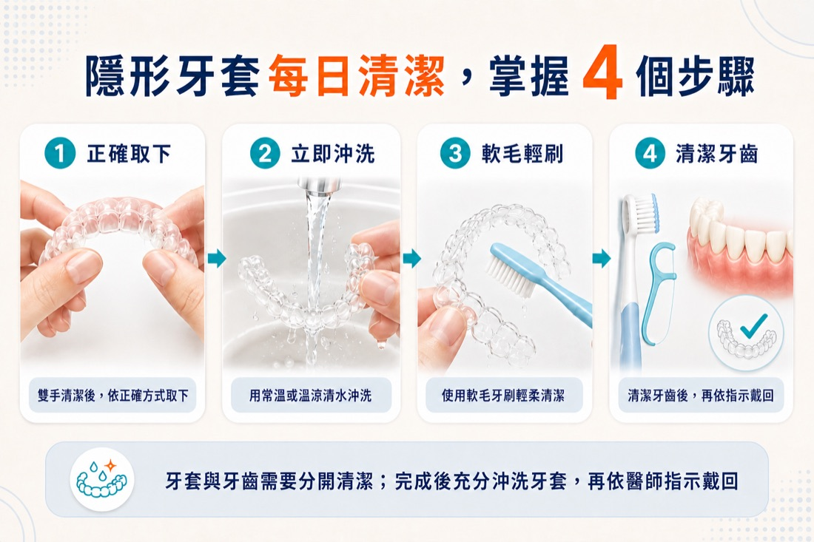
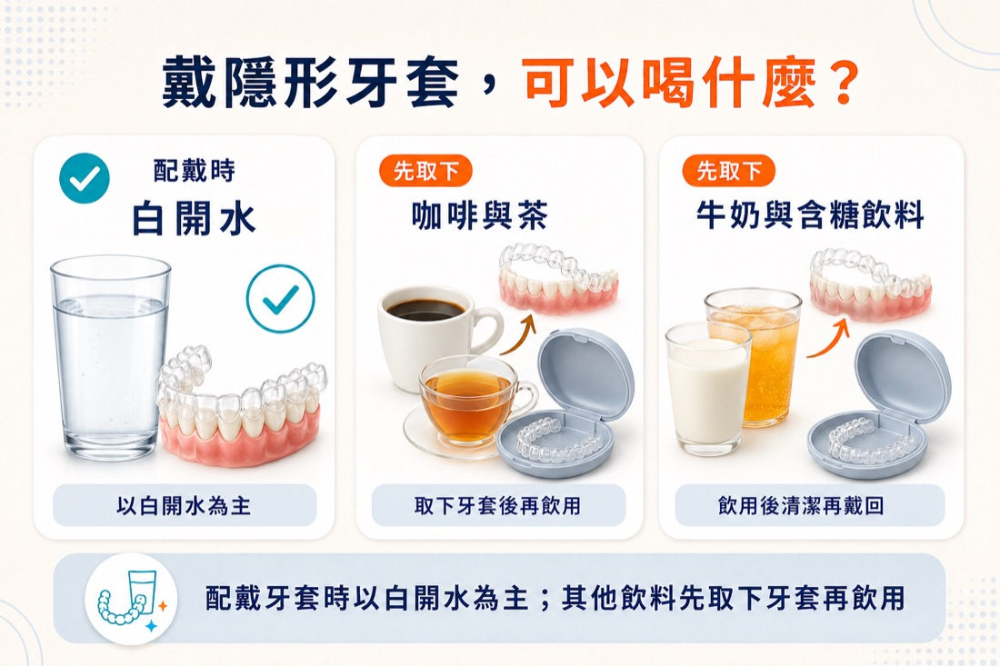
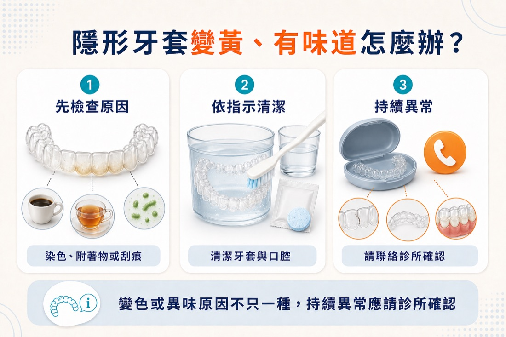

前言
開始戴隱形牙套後，最常遇到的往往不是複雜的治療問題，而是每天都會碰到的小事：牙套要用牙膏刷嗎？可以戴著喝咖啡嗎？吃完東西卻不方便刷牙，能不能直接戴回去？已經變黃或有味道，又該怎麼處理？
隱形牙套會長時間貼合牙齒。牙套本身要清潔，牙齒與牙縫也要維持乾淨；若食物殘渣、含糖或酸性飲料留在牙面，再被牙套覆蓋，可能增加異味、染色與口腔衛生問題。另一方面，錯用熱水或不合適的清潔方式，也可能使牙套受損。
最簡單的原則是：配戴時以白開水為主；吃東西或喝其他飲料前先取下；餐後清潔牙齒與牙套，再依醫師指示戴回。不同品牌與材質的照護規則可能略有差異，仍應以診所與原廠指示為準。

※隱形牙套與牙齒需要分開清潔；完成後充分沖洗牙套，再依醫師指示戴回。
本文重點
- 戴著隱形牙套時，以白開水為原則；吃東西及喝咖啡、茶、牛奶或含糖飲料前應先取下。
- 每次取下可先用常溫或溫涼水沖洗，再使用軟毛牙刷輕柔清潔。
- 不使用熱水或沸水，以免牙套材料變形。
- 吃完東西後，應先清潔牙齒與牙縫，再戴回乾淨的牙套。
- 牙套變黃或有味道時，可依原廠及醫師指示使用專用清潔產品；不要自行使用漂白水或不明藥劑。
- 若牙套變形、破裂、持續有異味，或配戴時明顯不密合，應聯絡診所確認。
隱形牙套怎麼清潔？每日照護 5 個步驟
1. 先洗手，再依正確方式取下牙套
取下牙套前先清潔雙手。從醫師教導的位置逐步鬆開牙套，避免只拉單側或用力扭折。若有附件、橡皮筋或其他輔助裝置，應依診所示範操作；不要自行用尖銳物品撬取。
2. 取下後立即沖洗
牙套取下後可先用常溫或溫涼的清水沖洗，減少唾液與附著物乾在表面。不要把牙套隨手包在衛生紙裡，以免誤丟；暫時不戴時應放回專用收納盒。
3. 使用軟毛牙刷輕柔清潔
使用乾淨的軟毛牙刷，輕刷牙套內外側與凹槽。刷洗力道不需要很大，重點是把附著物清除。隱適美官方建議以軟毛牙刷清潔，並用溫水充分沖洗；如需搭配牙膏、清潔錠或其他產品，應確認是否適用於正在使用的牙套材質。
部分美白牙膏或顆粒較粗的產品可能磨損透明裝置表面。為避免混用造成霧化或刮痕，建議依原廠與醫師指定的產品和頻率清潔。
4. 充分沖淨，不用熱水
清潔後要把牙套充分沖淨再配戴。請勿使用熱水、沸水或以高溫方式消毒；高溫可能讓牙套材料變形，進而影響貼合。浸泡專用清潔產品時，也應按照原廠說明的水溫、濃度與時間操作，不是泡越久或藥劑越濃越好。
5. 清潔牙齒與牙縫後再戴回
只洗牙套、沒有清潔牙齒，食物殘渣與牙菌斑仍可能留在牙套內。吃完東西後，理想做法是刷牙並清潔牙縫，再戴回已洗淨的牙套。日常仍應維持含氟牙膏刷牙與牙縫清潔，並依醫師安排接受口腔檢查與洗牙。
隱形牙套可以戴著吃飯嗎？
一般透明牙套在吃東西前應先取下，不建議戴著咀嚼。食物不但會卡在牙套與牙齒之間，咀嚼力量也可能刮傷、磨耗或使牙套變形。
隱形牙套可拆卸，不代表吃完後只要漱口就可以長期忽略刷牙。餐後若讓食物殘渣留在牙面，再把牙套戴回，等於讓牙齒長時間處於較難由唾液沖刷的環境。尤其牙縫較緊、裝有附件，或本來就容易蛀牙與牙齦發炎者，更需要遵循醫師提供的清潔方式。
若正在比較台南隱形矯正與固定式牙齒矯正，除了外觀與費用，也應把自己是否能穩定執行取下、清潔和收納納入考量。兩種方式的差異可延伸閱讀〈台南隱適美 vs 傳統牙套差在哪？療程時間與適合族群比較〉。
戴隱形牙套可以喝咖啡、茶或牛奶嗎？
配戴牙套時以白開水為原則。咖啡、茶、紅酒與深色飲品可能造成染色；牛奶、果汁、運動飲料、汽水或加糖咖啡則可能含有糖分或酸性成分。當液體進入牙套與牙齒之間，可能較不容易被唾液帶走。
熱咖啡或熱茶還多了一項風險：高溫可能影響牙套材料。因此，不論飲料是熱的、冰的、有沒有加糖，只要不是白開水，較穩妥的做法都是先取下牙套，喝完後清潔口腔，再戴回。
「用吸管就可以戴著喝」也不能完全避免液體接觸牙套與牙齒。吸管可改變飲料入口的位置，但不是讓含糖、酸性或易染色飲料變成可戴著喝的保證。

※配戴牙套時以白開水為主；咖啡、茶、牛奶及其他飲料應先取下牙套再飲用。
吃完飯不能立刻刷牙，可以直接戴回去嗎？
外食、開會或搭車時，確實可能沒有辦法立即完整刷牙。這時可先做最低限度的處理：
- 用清水充分漱口，盡量清除明顯食物殘渣。
- 用清水沖洗牙套，不要把未清潔的牙套直接戴回。
- 若有牙線棒或牙間清潔工具，可先處理明顯卡住的食物。
- 在環境允許後，儘快完成刷牙與牙縫清潔。
這是外出時的權宜方式，不應長期取代完整清潔。至於吃過酸性食物或飲料後多久適合刷牙，會受到飲食內容、口腔狀況與醫師建議影響；若經常遇到這種情況，可請醫師協助建立適合自己的餐後流程。
隱形牙套變黃怎麼辦？還能洗回透明嗎？
牙套看起來變黃或混濁，常見原因可能包括飲料色素、未及時清潔的附著物、清潔產品殘留、表面刮痕，或牙套材料隨使用時間出現外觀改變。先不要自行使用漂白水、酒精、高濃度藥劑或熱水處理。
可先依序確認：
- 是否曾戴著喝咖啡、茶或其他有色飲料
- 是否每次取下後都有沖洗，並每日清潔內外側
- 是否使用了不適合的牙膏、漱口水或清潔劑
- 黃色附著物是否刷洗與專用清潔後仍無法去除
- 牙套是否同時有裂痕、粗糙、變形或不密合
輕微表面附著可依原廠指示使用隱形牙套專用清潔產品，再充分沖洗；但已滲入材質的染色或刮痕造成的霧化，不一定能完全恢復透明。如果牙套仍在該階段的配戴期，不要因外觀變黃就自行提前換下一副，也不要擅自停戴，應先詢問診所。
隱形牙套有味道，代表沒有洗乾淨嗎？
異味可能與牙套表面的牙菌斑、唾液與食物殘留有關，也可能來自牙齒、牙縫、舌苔、牙齦或蛀牙等口腔問題。只清潔牙套而忽略口腔，味道仍可能反覆出現。
可先檢查自己的清潔流程：每日是否刷洗牙套、餐後是否清潔牙齒、牙縫是否有食物卡住、收納盒是否定期清潔與保持乾淨。若依指示清潔後仍持續有明顯異味，或合併牙齦紅腫、流血、疼痛、蛀洞或牙套表面損傷，應由牙醫師檢查原因。

※染色、附著物、口腔清潔與牙套損傷都可能影響外觀或氣味；持續異常時應請診所確認。
哪些方式不建議拿來清潔隱形牙套？
- 熱水或沸水：可能使牙套材料變形。
- 漂白水、酒精或不明藥劑：可能刺激口腔或損害材料，不應自行嘗試。
- 顆粒粗、強效美白或高磨耗產品：可能讓透明表面出現刮痕或霧化。
- 長時間浸泡一般漱口水：部分產品含色素、酒精或其他成分，是否適用應先確認。
- 用力刷洗或尖銳工具刮除：可能造成細小刮痕、裂痕或變形。
- 自行煮沸、烘乾或用高溫消毒：可能破壞牙套形狀與貼合。
不同隱形牙套品牌、材質與專用產品的使用說明並不完全相同。若不確定某一種清潔錠、超音波清洗機或消毒設備能否使用，先詢問提供治療的診所較安全。
什麼情況需要聯絡診所？
以下情況不建議只靠加強清洗處理：
- 牙套出現裂痕、缺角、明顯變形或邊緣刮口
- 原本密合的牙套突然明顯浮起或無法戴到底
- 清潔後仍持續有異味、厚重附著物或不明變色
- 配戴後牙齦持續紅腫、出血、疼痛或口腔反覆破皮
- 牙齒對冷熱敏感、疼痛，或懷疑有蛀牙
- 牙套遺失，或不確定應戴回上一副還是換下一副
牙套損壞或不密合時，不要自行加熱重塑。醫師需要依目前牙齒位置、牙套階段與治療計畫判斷後續做法。如果想了解牙套不密合與療程安排，可參考〈台南隱適美要戴多久？療程時間、每日配戴時數與影響因素整理〉。
外出清潔包可以準備什麼？
把清潔用品固定放在隨身包中，比臨時找工具更容易維持習慣：
- 有通風設計的牙套收納盒
- 旅行用軟毛牙刷與含氟牙膏
- 牙線、牙線棒或醫師建議的牙間清潔工具
- 可供漱口與沖洗的白開水
- 原廠或醫師建議的隨身清潔用品
收納盒本身也要定期清潔並保持乾淨。牙套取下後不要放進衛生紙、口袋或沒有保護的包包，也要避免放在高溫車內、陽光直射處或寵物能碰到的位置。
常見問題（FAQ）
Q1：隱形牙套每天要洗幾次？
每天都應固定清潔，取下後也可先以清水沖洗；吃完東西後則要清潔牙齒，再戴回乾淨的牙套。確切頻率與產品用法，應依使用品牌及醫師指示調整。
Q2：隱形牙套可以用牙膏刷嗎？
部分官方指引允許使用少量牙膏與軟毛牙刷，但磨耗性較高或強效美白牙膏可能使透明表面出現刮痕。建議確認診所與原廠對目前牙套材質的清潔建議。
Q3：戴著隱形牙套可以喝無糖黑咖啡嗎？
不建議。即使沒有加糖，咖啡仍可能染色；若溫度較高，也可能影響牙套材料。喝咖啡前先取下，喝完清潔口腔後再戴回。
Q4：戴著牙套可以喝氣泡水嗎？
配戴時以白開水為最穩妥原則。不同氣泡水可能含酸味劑、香料或糖分，不能一概而論；建議先取下牙套，或把產品成分提供給醫師確認。
Q5：牙套泡清潔錠越久越乾淨嗎？
不是。浸泡時間、水溫與濃度都應遵循產品及醫師指示。自行延長時間或提高濃度，不代表效果更好，反而可能影響材料或留下殘留物。
Q6：牙套變黃就要換下一副嗎？
不要自行提前換牙套。換片時機屬於治療計畫的一部分；若染色清潔後仍無法改善，可先聯絡診所，由醫師判斷是否繼續配戴、處理或更換。
Q7：只用漱口水、不刷牙可以嗎？
漱口不能完全取代刷牙與牙縫清潔。若外出當下不方便，可先用清水漱口並沖洗牙套，之後仍應儘快完成完整清潔。
把清潔流程變成隱形矯正的一部分
隱形牙套的照護重點並不複雜：吃飯與喝非白開水飲料前先取下，餐後清潔牙齒與牙套，不用熱水與不明藥劑，牙套不戴時放回收納盒。真正需要的是每天穩定執行，而不是等到變黃或有味道才一次用力清洗。
如果您正在尋找台南隱形矯正或台南牙齒矯正評估，可在諮詢時主動說明飲食、喝咖啡與外食習慣，並確認牙套清潔產品、外出流程及異常狀況的聯絡方式。不同品牌、治療階段與口腔條件可能有不同照護需求，應以醫師的個別指示為準。
若想了解自己的牙齒排列與隱形牙套照護方式，可加入文心牙醫官方 LINE，由診所協助安排諮詢。實際適用性、治療計畫與照護方式，仍須由醫師依個別檢查結果判斷。
本文為一般口腔衛教資訊，不能取代醫師診斷與個別照護指示。若牙套損壞、不密合，或牙齒與牙齦持續不適，請聯絡原治療診所。